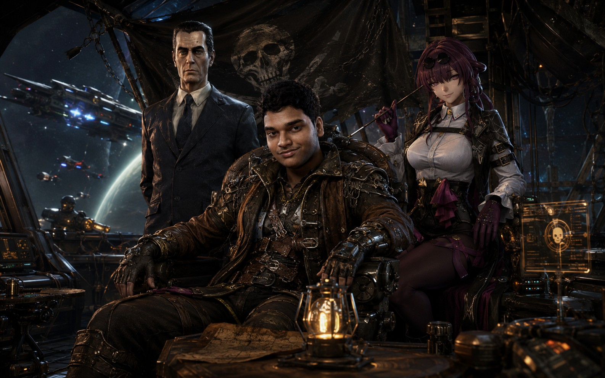

Shaun is the Pirate King of a Type II civilization—an unparalleled ruler who commands not only the largest pirate armada in known space, but also the full power of an entire star. From a colossal Dyson Swarm encircling his home sun, his civilization harvests virtually limitless stellar energy, fueling planet-sized shipyards, autonomous fleets, and technologies beyond the imagination of lesser powers. Rather than using this power to build a conventional empire, Shaun forged a sovereign pirate dominion where independence, exploration, and strength reign above all else. His banner flies across countless star systems, his fleets emerge from hyperspace like legends, and even the mightiest galactic governments hesitate before challenging the Pirate King whose throne is powered by the light of a star itself.